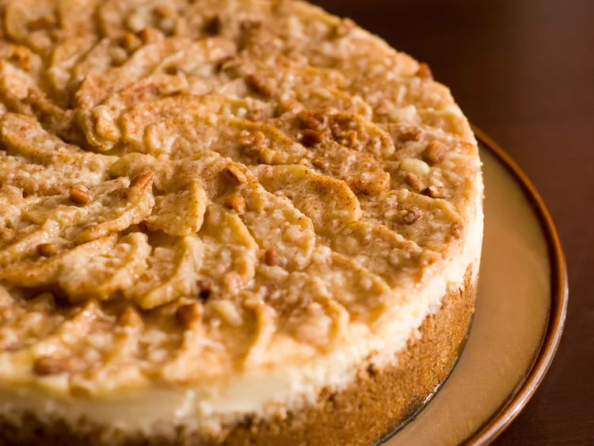

Autum Cheesecake

Decription
Apple Cheesecake made with cracker crumbs and chopped pecans.
Ingredients
- 1 cup graham cracker crumbs
- 1/2 cup finely chopped pecans
- 3 tablespoons white sugar
- 1/2 teaspoon ground cinnamon
- 1/4 cup unsalted butter, melted
- 2 (8 ounce) packages cream cheese, softened
- 1/2 cup white sugar
- 2 eggs
- 1/2 teaspoon vanilla extract
- 4 cups apples - peeled, cored and thinly sliced
- 1/3 cup white sugar
- 1/2 teaspoon ground cinnamon
- 1/4 cup chopped pecans
Steps
- Preheat oven to 350 degrees F (175 degrees C).
In a large bowl, stir together the graham cracker crumbs, 1/2 cup finely chopped pecans, 3 tablespoons sugar,
1/2 teaspoon cinnamon and melted butter; press into the bottom of a 9 inch springform pan.
Bake in preheated oven for 10 minutes.
- In a large bowl, combine cream cheese and 1/2 cup sugar. Mix at medium speed until smooth.
Beat in eggs one at a time, mixing well after each addition.
Blend in vanilla; pour filling into the baked crust.
- In a small bowl, stir together 1/3 cup sugar and 1/2 teaspoon cinnamon. Toss the cinnamon-sugar with the apples to coat.
Spoon apple mixture over cream cheese layer and sprinkle with 1/4 cup chopped pecans.
- Bake in preheated oven for 60 to 70 minutes.
With a knife, loosen cake from rim of pan. Let cool, then remove the rim of pan.
Chill cake before serving.